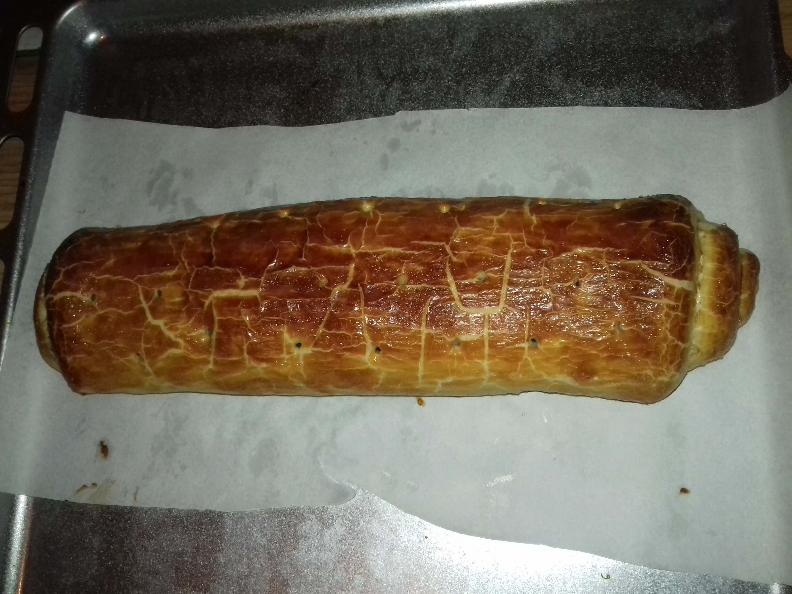

Classic traditional bejgli

Bejgli is a real Hungaricum. It is usually made at Christmas and Easter. It is usually flavored with walnuts and poppy seeds.
Ingredients
For the dough:
- 55 dkg of fine flour
- 15 dkg butter
- 10 dkg lard
- 6 dkg powdered sugar
- 1 pinch of salt
- 1 dkg of fresh yeast
- 2 egg yolks
- 1 dl of milk (and a little more)
Walnut filling:
- 30 dkg walnuts (ground)
- 10 dkg sugar (crystal)
- 1 teaspoon honey
- 4 teaspoons cinnamon
- 1 dl milk
- 2 packs of vanilla sugar
- Lemon peel obtained from 1 lemon
- Lemon juice obtained from 1 lemon
Poppy seed filling:
- 30 dkg poppy seeds (ground)
- 10 dkg sugar (crystal)
- 1 teaspoon honey
- 4 teaspoons cinnamon
- 1 dl milk
- 2 packs of vanilla sugar
- Orange peel obtained from 1 orange
- Orange juice obtained from 1 orange
For lubrication:
- 2 egg yolks
- 2 egg whites (left over from the dough)
Steps
Dough:
- Weigh out the flour, butter, fat, powdered sugar, and salt in a bowl. In this bowl, crumble the ingredients.
- In another bowl, weigh the yeast, milk, and egg yolks, then mix the ingredients until smooth.
- You do not need to knead the dough as soon as it becomes nice homogeneous, we have worked the ingredients in it, let us finish kneading. When we are done, the dough separates nicely from both our hands and the wall of the bowl.
- Form 4 equal dumplings from it, then cover with foil, let them rest in the fridge for 1 hour. While the dough is resting, prepare the fillings.
Fillings:
- Weigh the walnuts / poppy seeds into a bowl, for both cinnamon, vanilla sugar, lemon peel + juice / orange peel + juice, mix loosely.
- In a saucepan, bring the milk to a boil with the sugar and honey, then boil the walnut / poppy mixture and mix the resulting filling completely until smooth.
- Allow to cool completely. Once cooled, remove the dough from the refrigerator and assemble the bars one after the other.
Assembly:
- When the fillings are done, cooled down, we take the dough out of the fridge and put the bars together one after the other.
- Preferably, the thickness of the dough should be uniform when stretched. (I usually stretch it on baking paper, which I cut to size in advance - approx. 24x35 cm rectangles - and I stretch this dough into thin rectangles one after the other so that a little of the baking paper is left on each side).
- Spread half of the walnut / poppy seed filling on the stretched dough and spread it gently and as evenly as possible.
- Fold up the two shorter sides of the dough over the filling (1-1.5 cm) and press it slightly to the height of the filling level.
- In the same way, fold up one of the longer sides, and then roll up the bejglit with the paper, evenly. We do the same with all four parts.
- We line a baking sheet with baking paper, and after rolling it up (always the one already done) we carefully and nicely lower it into the baking tray.
- When we are done with this, prick the bejglik lengthwise with a toothpick, from where the steam leaves during baking. (You don't have to poke the whole bejglit back and forth everywhere.)
- The last moment, it will have a nice marbled, shiny top: Grease the bejglik thinly with egg yolk (also on the side), let it dry.
- Once the egg yolks have dried on the bejglik, now smear them thinly (including their sides) with egg whites and allow them to dry completely.
- Once the egg whites have been smeared with the egg whites, turn the oven set to 200 degrees for bottom-top baking, until the bejgliks dry, the oven heats up.
- Once the bejgli has dried, bake in the preheated oven at 200 degrees for 15 minutes, then after 15 minutes take it down to 170 degrees and bake for another 10 to 15 minutes. You can see the top when it’s done, its beautiful color betrays.
- When the bejgli has cooled, we slice it and we can eat it. We will store it covered for later.